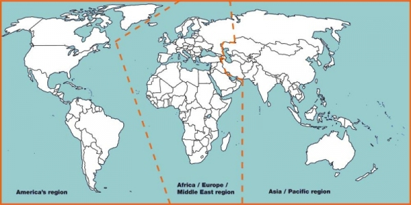

The INSARAG is organised into the three regional groups: Africa/Europe/Middle East Region, Americas Region and Asia/Pacific Region. These Regional Groups meet annually to take measures to strengthen regional USAR response and ensure the strategic direction and policies from the INSARAG Steering Group are implemented, and to assimilate relevant information from participating countries for submission to the INSARAG Steering Group.
Regional Groups encourage the participation of all countries in their region and aim to provide a forum to discuss USAR related issues, regional cooperation and capacity building. One of the primary outcomes of these meetings is an annual regional work plan that addresses capacity building, training and other issues relevant to integrated approaches to disaster response. Each Regional Group has at least one Chairperson and Vice-Chairperson, elected annually, and sits on the INSARAG Steering Group.
For more details on regional events, such as exercises and meetings visit the links to each regions' dedicated page.
